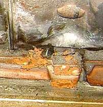

Aber wer glaubt schon den alten Meistern wie einem Hinz Kluibenschädel? Deswegen
mein ernstgemeinter Tipp für alle ahnungslosen Dösköppe:
Fragen Sie Ihren Lieferanten nach undeklarierten Zementanteilen in als Kalk-,
Traßkalk- oder Hydraulkalkmörtel verkauften Mörteln und Putzen. Sie werden sich wundern. Lassen Sie
sich die Chromatanteile, Sulfatanteile und Magnesiumanteile deklarieren. Glauben Sie nicht, daß mit chromatarmem
Zement das Problem gelöst sei. Das unterstützt vielleicht die Vermarktung neuer Zementsorten mit neuen
Zutaten, die das gefährliche Chromat zum Teil an sich binden und damit "neutralisieren". Wo ist aber der Nachweis,
daß es damit keine Maurerkrätze mehr gäbe? - es gibt ja noch mehr Problembestandteile im Zement.
Und was würde uns chromatfreier Zement schon groß nützen, wenn der sonstige Dreck da drin das Bauwerk
nach besten Kräften schädigt? Schluß mit den Geschäften auf Grundlage unser aller Kasse und
Gesundheit! Und aufgepaßt: Hydraulstoffe sind grundsätzlich riskant:
(aus: F. Winnefeld, K. G. Böttger und D. Knöfel, Bau- und Werkstoffchemie, Universität-GH Siegen: "Eigenschaften von Baukalken mit unterschiedlich hohen hydraulischen Anteilen - eine kritische Betrachtung hinsichtlich des Einsatzes für die Denkmalpflege" in: 4. Internationales Kolloquium, Werkstoffwissenschaften und Bauinstandsetzen, Technische Akademie Esslingen, 17.-19. Dez. 1996)
Obendrein sind alle Zementmörtel bzw. Hydraulmörtel allerbeste Trocknungsblocker, da ihre spezifische Mineralstruktur mit großer Oberfläche (im REM-Mikroskop bei entsprechender Auflösung watteartige Struktur) im Vergleich zu Kalkkristallen unwahrscheinlich hohe Wassermengen binden / zurückhalten können. Der Trocknungsfaktor "s" nach dem französischen Bauphysiker Roger Cadiergues liegt für Zementmörtelmit 2,5 entsprechend um den Faktro 10 über dem von Luftkalkmörtel mit 0,25. Im Klartext: Zementmörtelhalten eingedrungene Feuchte 10 mal länger als der demgegenüber superschnell austrocknende Luftkalkmörtel. Daß auch der Dehnfaktor "a", d.h. die Temperaturdehnung des Baustoffes bei Temperaturveränderungen beim Zementmörtel etwa doppelt so groß ist als beim Luftkalkmörtel und damit auch deutlich über den Dehnfaktoren von Ziegel- und Natursteinen, kommt zu den wahrlich beeeindruckenden, aber leider in aller Regel bei den Bauschaffenden und bei den Bauherren vollkommen unbekannten Nachteilen der hydraulischen Bindemittel noch hinzu. Weitere technisch-physikalische Details hier.


Aus meiner Bauberatung (Foto Bauherr): Versalzte Wand, falsch verputzt - das Ergebnis:
Zementputzversaute Mauerziegelschale wird
durch Salzkristallisation, Feuchtestau und Frost abgesprengt.
Das freigelegte Fundamentmauerwerk im speicherfähigen Erdreich hält die Schadsalzbefrachtung aus.
Dort gibt es ja wg. Dauerfeuchte weniger Kristallisationsdruck,
wg. Speicherfähigkeit weniger Frostangriff und keinen Feuchteblockerverputz.
Die Mörtelfugen im Fundament waren natürlich auch hinüber.

Ähnlicher Schadensfall aus Bauberatung (Foto Bauherr): Hier liegen nur teilweise
Salzüberlastungen vor - ein Unding, wenn man an "aufsteigende Feuchte" glaubt - die ja
eine von unten nach oben einheitliche Salzlösung und Salzbeladung
und Schädigung des Mauerwerks hervorbringen sollte. Feuchteblockender
Zementverputz schädigt dann an den salzüberlasteten Mauerpartien
am meisten. Die morschbröseligen Mauerziegel lassen sich mit dem Finger
herauspulen. Wie es hier weitergeht? Fragen Sie mal
versuchsweise drei Mauertrockenleger. Da tropft das salzige Wasser aus
Ihren Äuglein! (zum Handwerkerquiz)
Neue Schadensbeispiele aus Thüringen belegen, daß die denkmalzerstörenden Katastrophen der 80er Jahre in Niedersachsen (Teileinsturz St. Johannis in Lüneburg durch Treibmineralbildung nach statisch empfohlener Zement-Verpressung u. viele andere Fälle) im Stacheldraht hängengeblieben sind.
 .
.
Mobile Kalkkristalle (Kalksinter) aus Kalkzement-Trockenmörtel eines renommierten Herstellers blühen aus
(Bildautor: Peter Schneider 12.5.03)

Themenlink: Was tun bei Ausblühung?
ibau-Planungsinformationen 10.2.1998:
Bonn (vwd/AP) - Das Freiburger Öko-Institut hat ein in der Abfallentsorgung neues Verfahren scharf kritisiert, bei dem Müll getrocknet und anschließend in Zementwerken verbrannt wird. Bei dieser Methode "kann mehr als die 150fache Menge langlebiger krebserregender Stoffe wie Chrom, Cadmium und Arsen in die Umwelt gelangen als bei anderen Formen der Restabfallbehandlung", sagte Günter Dehoust vom Öko-Institut in Bonn. Er stellte das Ergebnis einer Studie über sieben Verfahren zur Restabfallbehandlung vor.
[...] Bei dem neuen Verfahren werde der Abfall zunächst getrocknet, von Metallen und Mineralstoffen weitgehend befreit und dann etwa in Zementwerken verbrannt, erklärte Dehoust. Einer der "ökologischen Pferdefüße" liege darin, daß in Zementwerken keine Schadstoffsenken für Schwermetalle existieren. Sie gelangten entweder mit dem Abgas in die Umwelt oder mit dem Zement in den Wirtschaftskreislauf zurück. Die Folgen seien große Umweltrisiken und zusätzliche Gesundheitsgefahren. [...]
Die Bundestagsfraktion von Bündnis 90/Die Grünen griff die Ergebnisse der Untersuchung des Öko-Instituts mit der Forderung auf, dem Verwertungsmißbrauch von Abfällen umgehend ein Ende zu setzen. Ihr Umweltexperte Jürgen Rochlitz verwies darauf, daß schon seit Jahren in Zementwerken als "Sekundärbrennstoff" umdeklarierter Müll mitverbrannt werde.
Da sich dadurch die hohen Verbrennungskosten von bis zu 700 DM pro Tonne erheblich reduzieren ließen, gelten nach seinen Worten "die Zementwerke ebenso wie die Hochöfen inzwischen als Eldorado für Müllwerker". Während für Müllverbrennungsanlagen die strengen Werte der 17. Bundesimmissionsschutz-VO berücksichtigt werden müssen, dürfen die Emissionen der Zementwerke durch eine Mischkalkulation mit den Werten der TA Luft bedeutend höher liegen, monierte Rochlitz. [...]"
Von Wulf Reimer
Stuttgart, 26. August - Vier Jahre lang wurde
Baden-Württemberg von Unternehmern gefürchtet und von Ökologen
gelobt wegen der Vorstöße der CDU/SPD-Landesregierung zur Luftreinhaltung.
Jene Offensive trug ein Namenssiegel: Harald B. Schäfer. Doch mit
dem Ende der großen Koalition 1996 verlor der sozialdemokratische
Umweltminister seinen Posten in Stuttgart und der Umweltschutz im
Südwesten einen forschen Anwalt. Beobachter, die seither ein Aufweichen der
harten Schäferschen Linie bis hinunter zu wieder milde gestimmten
Gewerbeaufsichtsämtern beklagen, sehen ihre bösen Ahnungen bestätigt: Dem
fragwürdigen Beispiel anderer Länder folgend, wird nun auch in
südwestdeutschen Zementwerken munter Müll verbrannt. [...]
Die Direktorin des Zentrums für interdisziplinäre Forschung an der Universität Bielefeld, Gertrude Lübbe-Wolff, misst Risiken in Zusammenhang mit der Abfallverbrennung in Zementwerken wachsende Bedeutung bei, schon rein quantitativ. In der deutschen Baustoffindustrie gehe man davon aus, dass der Anteil der Abfälle am Brennstoffeinsatz in Zementwerken, der 1996 bei 13,4 und 1997 bei 15,8 Prozent gelegen habe, "weiter steigen muss und wird". In einer umfangreichen Abhandlung bemängelt die Professorin für Öffentliches Recht eine ohne Öffentlichkeitsbeteiligung vorgenommene "Entschärfung einzelner Grenzwerte" für den Schadstoffausstoß.
Den Tübinger Fall machen noch ein paar Dingi politisch brisant: So soll Eberhard Schleicher, global operierender Konzernherr der Ulmer Zement- und Steinwerke Schwenk, bei Minister Teufel sich über den engherzigen Umweltjuristen Kirschenmann beschwert haben. Zeitungsberichte, wonach Schleicher früher der CDU Spenden "in sechsstelliger Höhe" zukommen ließ, sind bisher nicht dementiert worden.
Das vermutete Mäzenatentum zeitigte Folgen: Mitglieder einer Bürgerinitiative in Reutlingen, die dort den Bau eines Asphaltmischwerkes zu verhindern suchen, haben bei der Staatsanwaltschaft Ulm Strafanzeige erstattet gegen Regierungspräsident Wicker wegen des "Verdachts der Rechtsbeugung bei der Erteilung der Genehmigung zur Abfallmitverbrennung durch das Zementwerk Schwenk in Allmendingen". [...]
Schon vor knapp zwei Jahrzehnten hatte man [=Zementwerk Rohrbach in Dotternhausen] bei Rohrbach angefangen, alte Autoreifen in der Zementproduktion einzusetzen. Mittlerweile werden in Dotternhausen jährlich 7000 Tonnen Reifen (entspricht 840.000 Pneus) verwertet, ungefähr 20 Prozent des Regelbrennstoffs Kohle und Schweröl. [...]
Es wurde den Firmen [Schwenk und Heidelberger durch Einflußnahme des "CDU-geführten Stuttgarter Umweltministerium"] erlaubt, Altsande, Teppichböden, Paraffine und fluorhaltige Kohlenstäube zu verheizen, ohne dass die Anlage vorher - zur Verminderung von Stickoxiden - mit einer Abgasreinigung nachgerüstet werden mussten - wie es in kommunalen Müllöfen Standard ist. [...]"
Wie sagt der Lateiner? Quod licet Zementofi, non licet Bürgerofi.
Obermain-Tagblatt Lichtenfels 12.4.03:
BONN/HAMBURG
Für die Beteiligung an einem Zement-Kartell müssen
mehrere deutsche Baustoffhersteller hohe Millionen-Bußgelder zahlen.
Der "Welt" zufolge verhängte das Bundeskartellamt
Strafen in einer Gesamthöhe von rund 980 Millionen Euro. ...
Das Zement-Kartell habe nach Erkenntnissen der Bonner Wettbewerbshüter mehr als
30 Jahre existiert und dadurch die Preise für Zement künstlich
hoch gehalten. Zudem seien zwischen den beschuldigten Firmen Absatz-Gebiete aufgeteilt worden. ...
29 von 30 beschuldigten Unternehmen hätten zwischenzeitlich
die Verstöße zugegeben, darunter die größten deutschen
Zementhersteller Readymix, Dyckerhoff und Alsen, hieß es weiter.
Sie müssten zwischen 30 und 95 Millionen Euro zahlen. Lediglich Heidelberg-Cement
bestreite weiterhin eine Beteiligung. ..."
Neue Presse 12.7.1989:
BERLIN. - Die elf in Süddeutschland tätigen Zementfirmen haben über Jahre ihren Kunden kräftig in die Tasche gegriffen. Private Bauherren und Steuerzahler mußten nach Schätzungen des Bundeskartellamts in Berlin mindestens 200 bis 300 Millionen Mark mehr bezahlen, weil die Firmen durch die Vereinbarung von Produktionsquoten den Wettbewerb untereinander ausgeschlossen hatten. Das ist nach Aussagen des Kartellamts nur eine sehr vorsichtige Schätzung, wahrscheinlich liegt der Betrag deutlich höher.
Bei einer Durchsuchungsaktion bei acht dieser Firmen fiel den Wettbewerbshütern eine "exakte Kartellbuchhaltung" in die Hände. In ihr war in langen Zahlenreihen fein säuberlich aufgeführt, welche Liefermengen den einzelnen Unternehmen zustanden, wieviel sie tatsächlich geliefert haben und welche Unter- beziehungsweise Überschreitungen jeweils entstanden.
Bis 1986 habe es im Raum Karlsruhe noch einen "Hecht im Karpfenteich" gegeben, dessen Geschäftsführer sich strikt weigerten, dem Kartell beizutreten. Dann ging die Mehrheit an diesem Unternehmen auf einen "Kartellbruder" über, womit das Problem gelöst war. [...]"
BONN. Das Bundeskartellamt hat im größten Verfahren seiner Geschichte wegen Absprachen in der Betontransportbranche gegen 33 Unternehmen Bußgelder in Höhe von 255 Mio. DM verhängt. An den wettbewerbseinschränkenden Absprachen seien insgesamt rund 50 Unternehmen und damit fast alle wichtigen Unternehmen der Branche beteiligt gewesen, so Dieter Wolf, Präsident des Kartellamtes in Bonn.
In den Verabredungen sei geregelt worden, wer welches Bauprojekt mit welchen Mengen beliefern durfte.
Das Bußgeld müsse aus den versteuerten Gewinnen bezahlt werden und soll so die mit den Absprachen erzielten Mehrerlöse abschöpfen.
Das Unternehmen Readymix prüft unterdessen juristische Schritte gegen die Bußgeldbescheide. Von den Unternehmen, die vom Kartellamt untersucht werden, gehören fünf zur Readymix Baustoffgruppe. Die Gesamtgeldbuße würde bei Vollzug mit rund 70 Mio. DM auf die Readymix AG durchschlagen."
Irgendwelche Fragen? Hier!